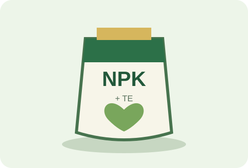
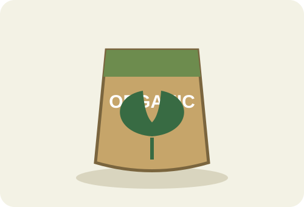
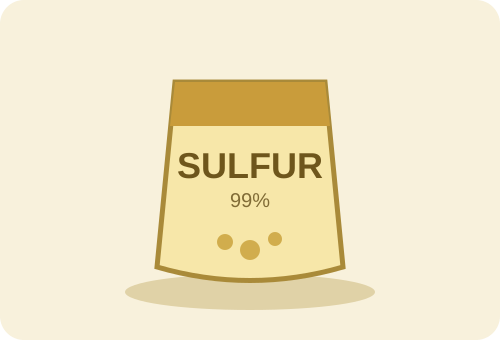
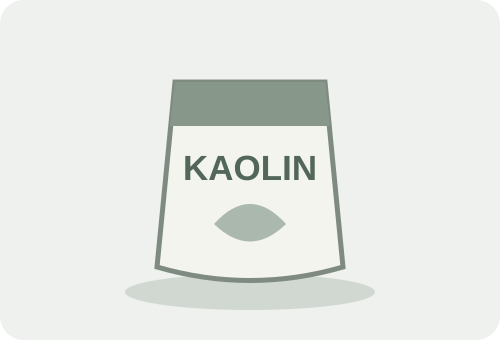

کودهای ماکرو NPKمحصولات باریش
فهرست نامها از آرشیو محصولات و صفحه معرفی شرکت استخراج شده است. مشخصات فنی تأییدنشده درج نشدهاند.
کود باریش ماکرو NPK 12-12-36+TE
جزئیاتکود باریش ماکرو NPK 15-5-30+TE
جزئیاتکود باریش ماکرو NPK 20-20-20+TE
جزئیات
کودهای آلیکود باریش پیستاک
جزئیاتکود باریش جنرال
جزئیاتکود مرغی باریش
جزئیاتکود مرغی باریش ویژه
جزئیات
محصولات گوگردیپودر گوگرد باریش میکرونیزه ۹۹ درصد مش 325
جزئیاتگوگرد پودری 99 درصد باریش سولفیدو ویژه
جزئیاتپودر گوگرد زرین شیراز
جزئیاتگوگرد بنتونیتدار 75 درصد باریش
جزئیات
محصولات خارجی